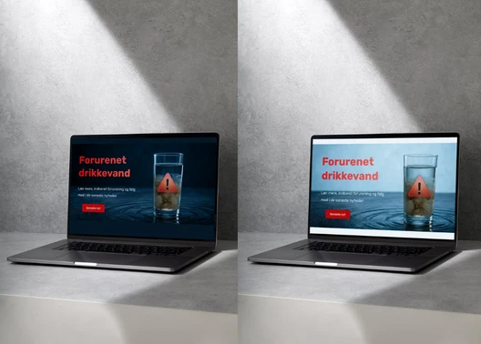
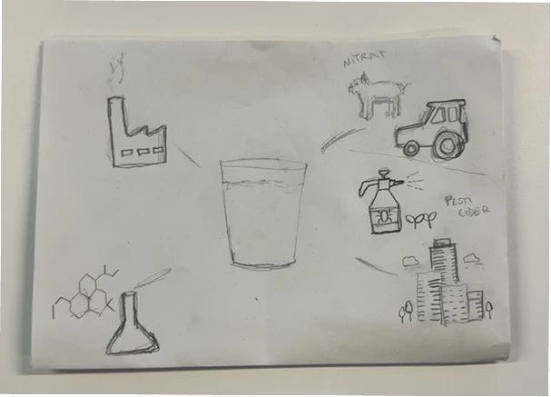
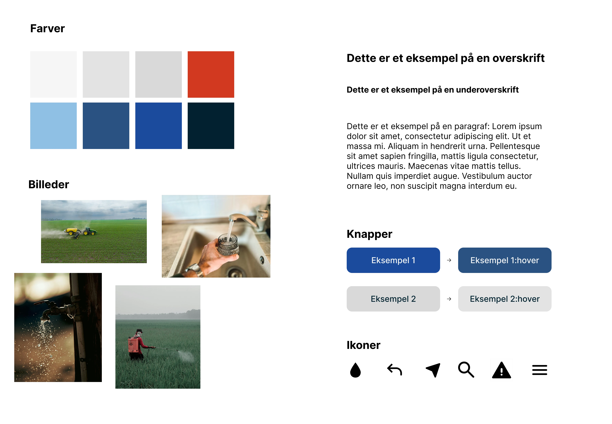
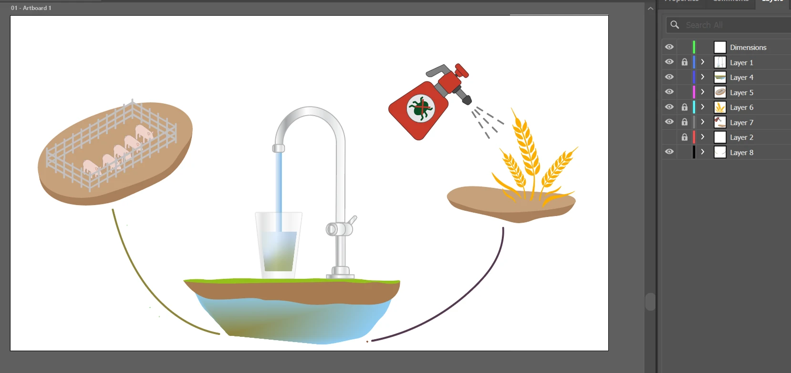
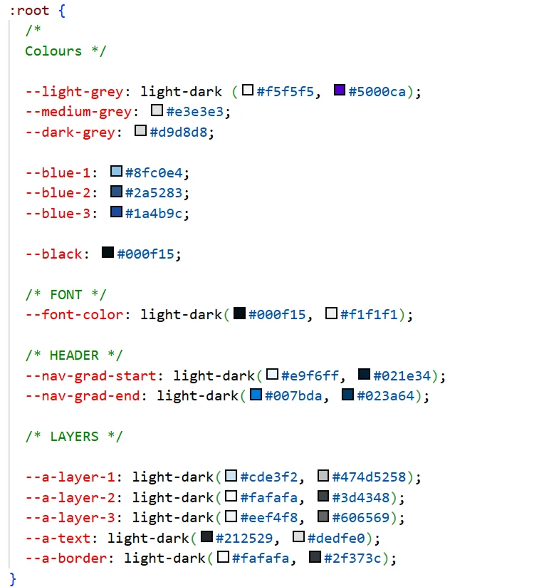
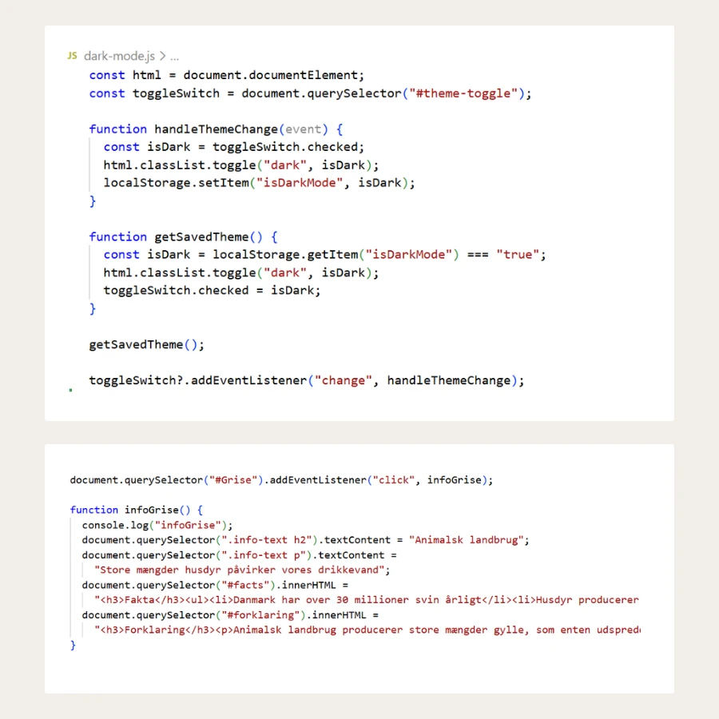
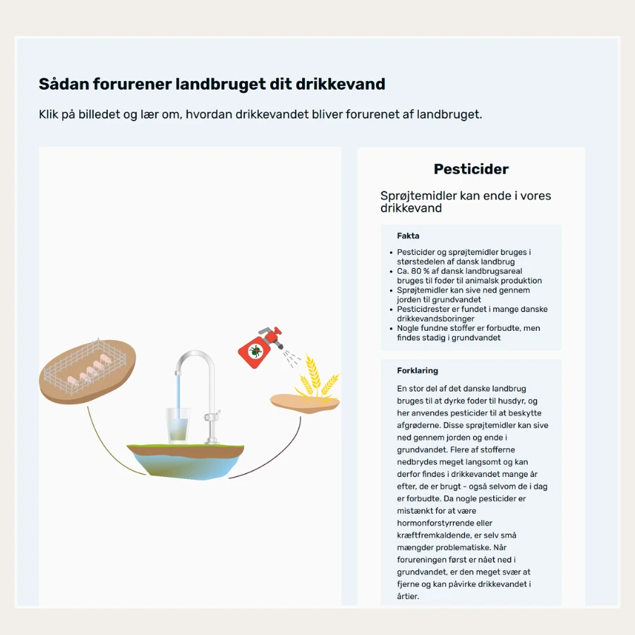
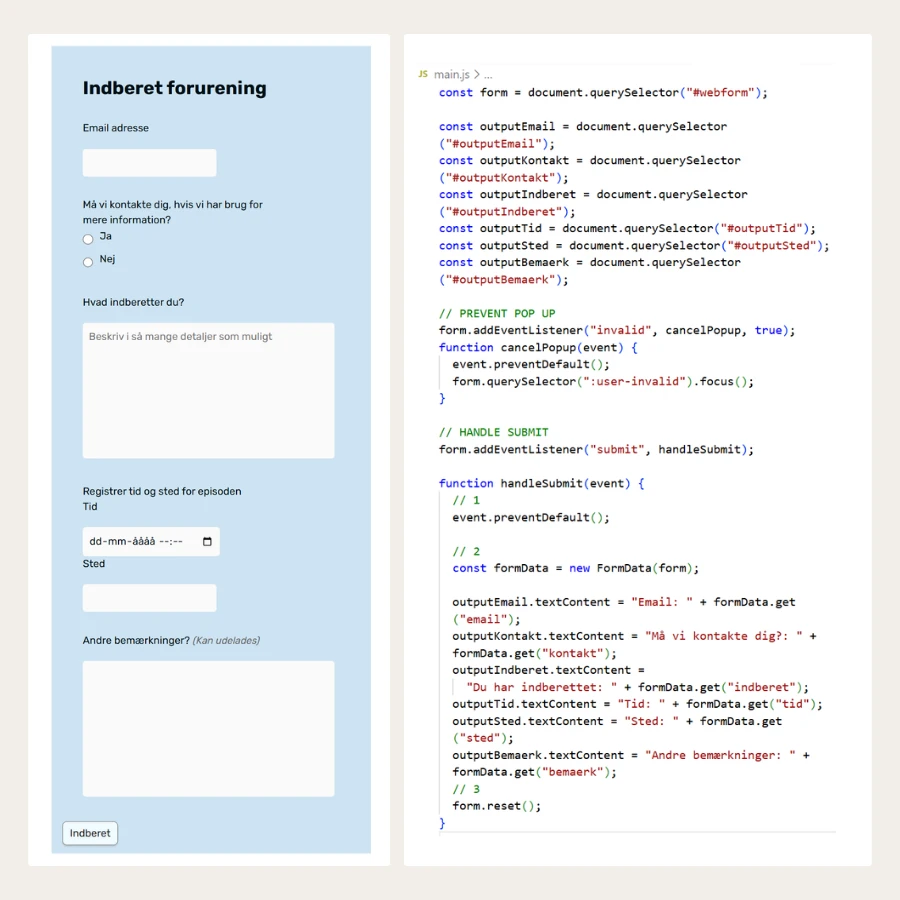

Tema 4
Grundlæggende brugergrænsefladeudvikling
I tema 4 arbejdede jeg med videreudvikling af en eksisterende brugergrænseflade. Opgaven tog udgangspunkt i et udleveret “emergency site”, som vi skulle tilpasse til et selvvalgt emne og videreudvikle med blandt andet Adobe Illustrator, SVG, JavaScript og mere avanceret CSS.

Projektet: Drikkevandsforurening i Danmark
Jeg valgte at lave mit emergency site om drikkevandsforurening i Danmark, fordi emnet var aktuelt i medierne på det tidspunkt. Sitet skulle informere brugeren om, hvordan drikkevand kan blive påvirket af blandt andet animalsk landbrug, pesticider og forurening.
Visuelt arbejdede jeg med blå og røde farver for at understrege kontrasten mellem vand, fare og akut handling. Projektet gav mig mulighed for at kombinere et alvorligt samfundsrelevant emne med udvikling af grafik, interaktive elementer og funktionalitet i JavaScript.
Proces
Herunder kan processen foldes ud i mindre dele. Den viser, hvordan jeg arbejdede fra udleveret site og emnevalg til visuelt koncept, SVG-grafik, JavaScript-funktioner og færdig brugergrænseflade.
Udgangspunkt og emnevalg
Projektet tog udgangspunkt i et udleveret emergency site, som vi skulle videreudvikle og tilpasse til et selvvalgt emne. Jeg valgte drikkevandsforurening i Danmark, fordi det var et aktuelt emne, som både havde samfundsmæssig relevans og et tydeligt visuelt potentiale.
Min version af sitet skulle gøre brugeren opmærksom på, hvordan forurening kan påvirke drikkevandet, og hvordan forskellige faktorer som animalsk landbrug og pesticider kan spille ind.

Visuelt koncept og designvalg
Jeg valgte en visuel retning med blå og røde farver. Den blå farve refererede til vand og troværdighed, mens den røde farve understregede fare, urgency og emergency-tematikken.
Jeg lavede selv logo, infografik og flere visuelle elementer. Derudover brugte jeg AI-genererede billeder til nyhedsartikler, så sitet fik et mere komplet og indholdsorienteret udtryk.

Illustrator og SVG
I temaet arbejdede jeg for første gang med Adobe Illustrator. Jeg brugte programmet til at udvikle grafiske elementer og en mere avanceret SVG, der viste, hvordan drikkevand kan blive forurenet af animalsk landbrug.
Illustrator var svært i starten, men efterhånden blev det tydeligt, at det er et stærkt værktøj til at skabe præcise og skalerbare grafiske elementer til web. Arbejdet med SVG gav mig også en bedre forståelse for, hvordan grafik kan integreres direkte i kode og bruges som en aktiv del af brugergrænsefladen.

Arbejde med eksisterende kode
En stor del af opgaven var at arbejde videre med en eksisterende kodebase. Det var en anderledes proces end i de tidligere temaer, fordi jeg først skulle forstå, hvordan sitet var bygget op, før jeg kunne ændre og videreudvikle det.
Som jeg forstod det, var noget af koden ikke længere relevant. Derfor blev det en vigtig del af processen at identificere, hvad der skulle bevares, ændres eller kasseres. Det var udfordrende, men også meget lærerigt, fordi det trænede mig i code comprehension og i at læse kode kritisk.
Drudover var det en del af opgaven at arbejde med custom CSS properties. Det er noget, jeg fandt brugbart i arbejdet med at strømline styling og kode på tværs af siderne, og er noget jeg har anvendt i de efterfølgende projekter.

JavaScript: navigation og darkmode
Jeg brugte JavaScript til at skabe funktionalitet på sitet. Blandt andet lavede jeg en burgermenu, hvor et klik tilføjede og fjernede en aktiv class på både burgerikonet og navigationen. Det gjorde menuen interaktiv og brugbar på mindre skærme.
Jeg arbejdede også med darkmode. Her brugte jeg en toggle, der tilføjede en dark-class til HTML-elementet. Ved hjælp af localStorage blev brugerens valg gemt, så sitet kunne huske darkmode-indstillingen, når siden blev åbnet igen.

Interaktiv infografik
Jeg lavede også en interaktiv infografik, hvor brugeren kunne klikke på forskellige elementer og få vist ny tekst, fakta og forklaring. I JavaScript brugte jeg event listeners og funktioner, der ændrede tekstindhold og HTML på siden.
Det gjorde infografikken mere aktiv og brugerstyret, fordi brugeren ikke bare skulle læse en statisk forklaring, men kunne undersøge forskellige dele af problemstillingen gennem interaktion.

Formular og brugerinput
I projektet arbejdede jeg også med en formular. JavaScript blev brugt til at forhindre standard submit-adfærd, hente brugerens input med FormData og vise oplysningerne som output på siden.
Jeg arbejdede blandt andet med felter som email, kontakt, indberetning, tid, sted og bemærkninger. Formularen gav mig en praktisk introduktion til, hvordan brugerinput kan håndteres og omsættes til synligt indhold i brugergrænsefladen.

Refleksion
Tema 4 var et vigtigt skridt videre fra de tidligere temaer, fordi jeg ikke længere kun skulle bygge en side fra bunden, men også forstå og videreudvikle en eksisterende løsning. Det var udfordrende at arbejde med kode, som andre havde skrevet, især fordi dele af koden virkede forældet eller ikke længere relevant. Derfor blev oprydning og forståelse af kodebasen en stor del af processen.
Den største udfordring var JavaScript. Det føltes stadig som en “black box” på flere punkter, men samtidig kunne jeg se, at jeg faktisk havde lært meget, fordi funktionerne endte med at virke på sitet. Temaet gav mig især erfaring med at skabe interaktivitet og med at undersøge tekniske løsninger, når jeg ikke umiddelbart vidste, hvordan noget skulle kodes.
Efterrefleksion
Tema 4 styrkede især min forståelse for Illustrator, SVG, JavaScript og custom properties i CSS. Jeg fik erfaring med, hvordan visuelle elementer og tekniske funktioner kan arbejde sammen i en brugergrænseflade.
Hvis jeg skulle lave projektet igen i dag, ville jeg lave nogle mere simple illustrationer i Illustrator og sætte mere tid af til at forstå JavaScript fra starten. Samtidig kan jeg se, at projektet rykkede mig fagligt, fordi jeg arbejdede med funktioner, der var svære, men som endte med at fungere.